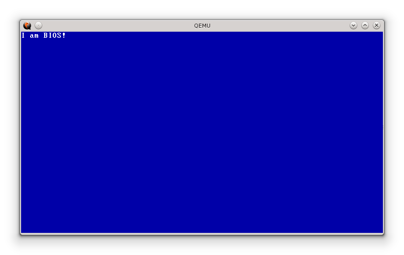

Some night (Summer 2013, I was freshman in CSED) while I was sleeping, I dreamed that I wrote a BIOS and managed to run it on a computer (perhaps my PC)... Next morning I decided to make it real. So I wrote this small BIOS that just prints "I am BIOS!" on screen.
Actually, it was not really easy to achieve this. I had to learn about a lot of details that the PC BIOS hides from systems programmers. The Hello World BIOS consisted of 2 parts: Protected Mode Code and VGA driver. The VGA driver initializes the VGA and brings it into a functional text mode with 80x25 chars. This was my first direct interaction with the VGA hardware and registers. It was interesting when it finally worked! Here is a screenshot from QEMU ($ qemu -bios bios.bin):
